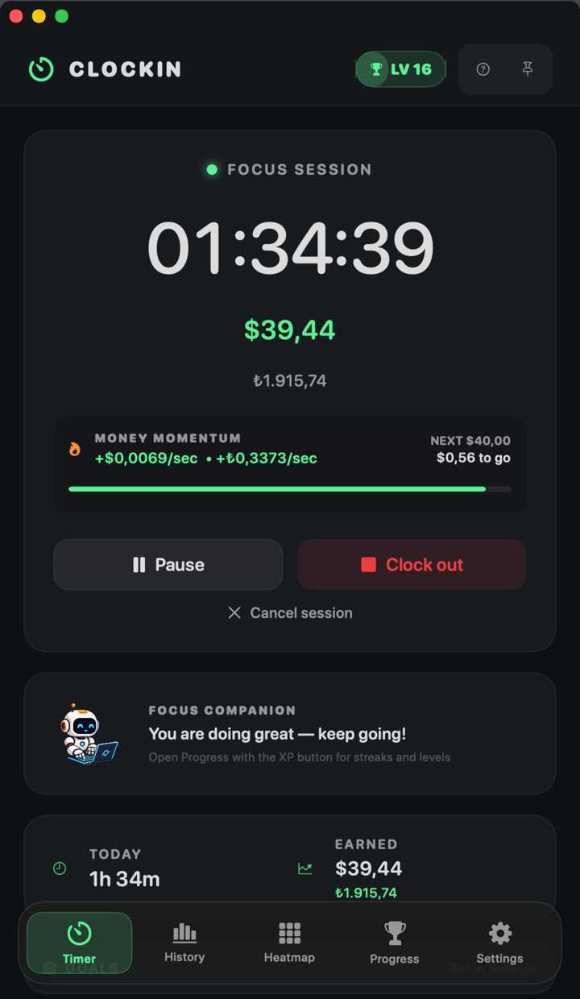
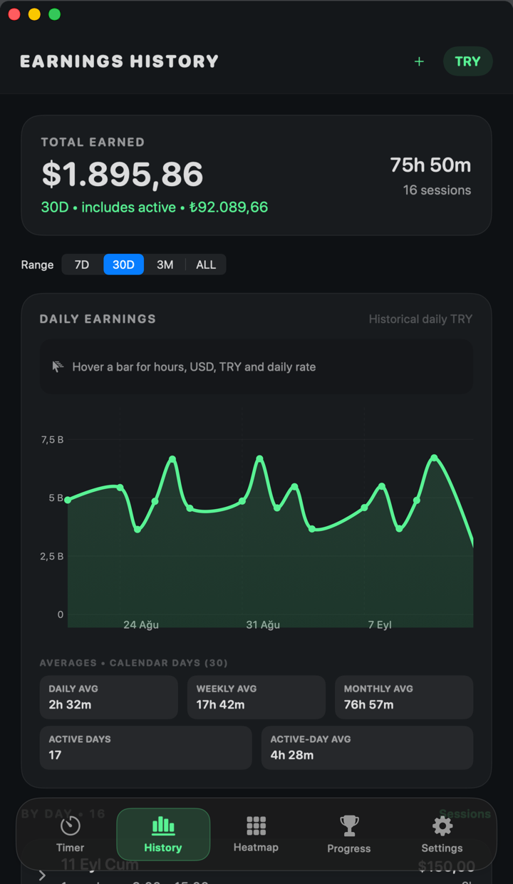
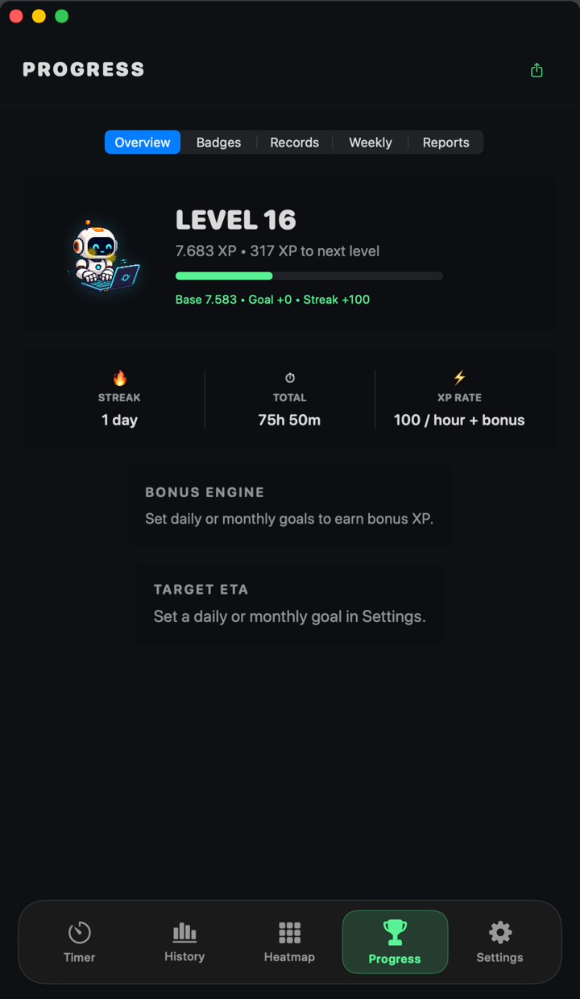

Make time
feel well spent.
Find your focus.
Clockin keeps track of your time and earnings.
macOS 14 or later Apple Silicon & Intel
Hi, I’m Clockin.
Shall we get to work?
09:00 / A fresh start
One click.

One click.
Find your focus.
You take the first step. Clockin keeps track of your time and what it’s worth.

Ready when you are.
Ready when you are
00:00:00time well spent
This session₺0,00
Sample timer · TRY 300 / hour
Right at home on your Mac.
Your time, earnings and progress.
Always within reach.



Start, take a break, pick up where you left off.
Real screenshots from the app. Sample data.